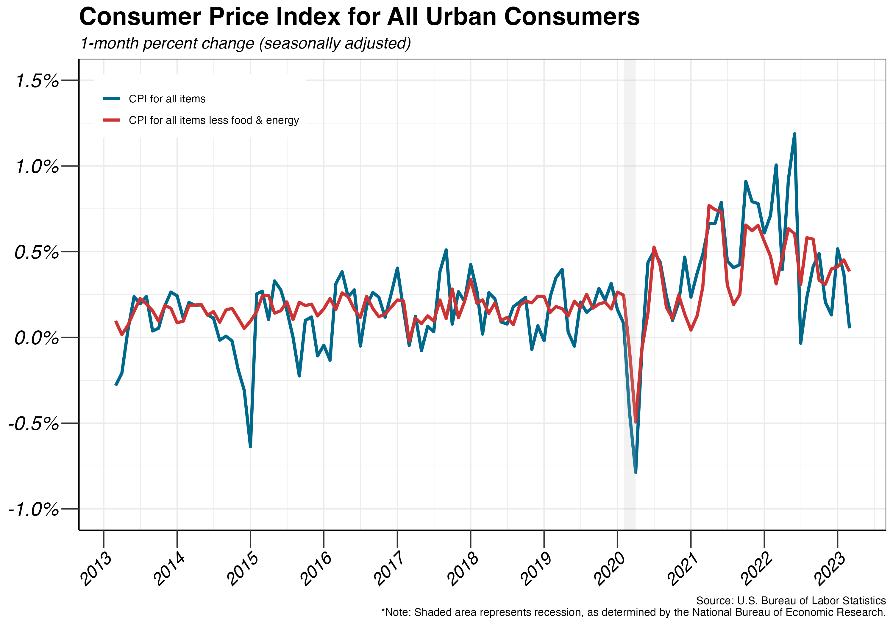
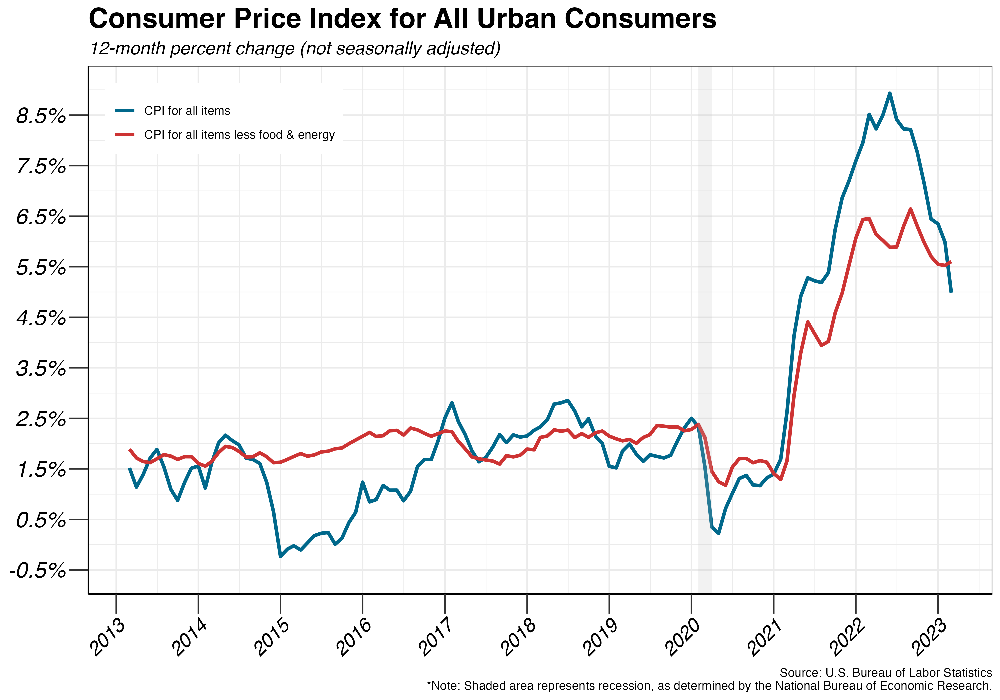
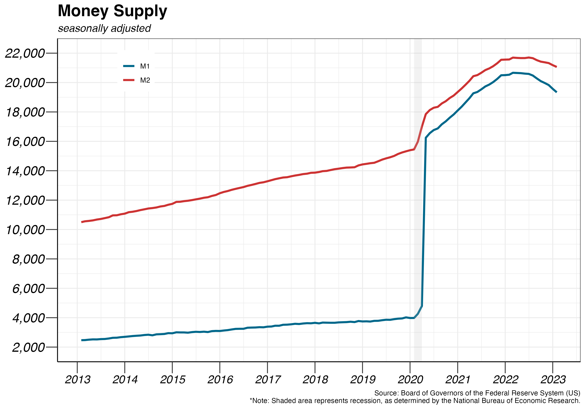
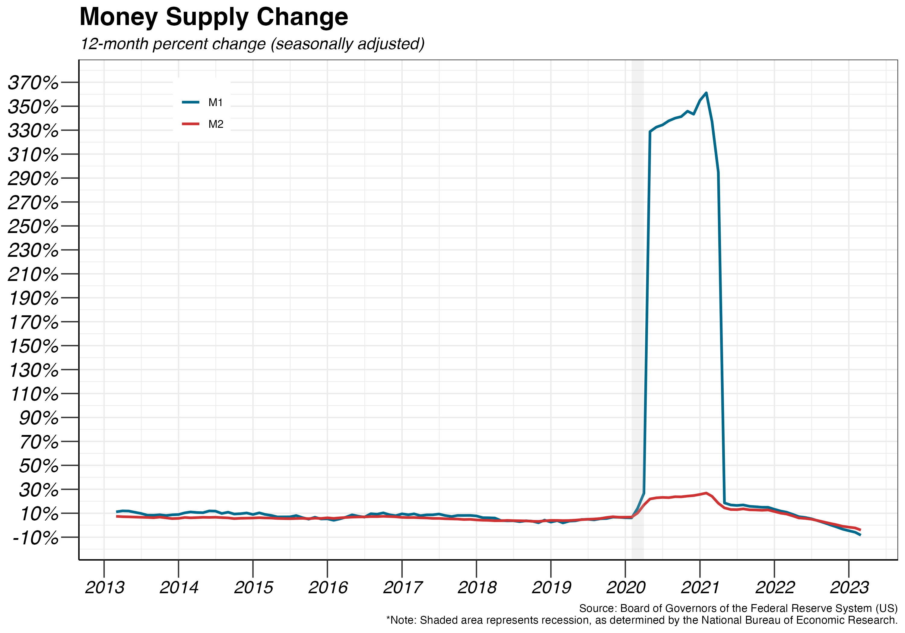
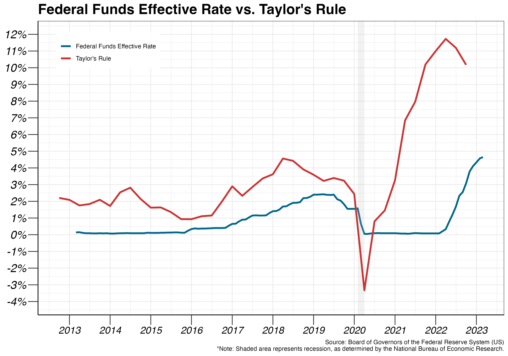
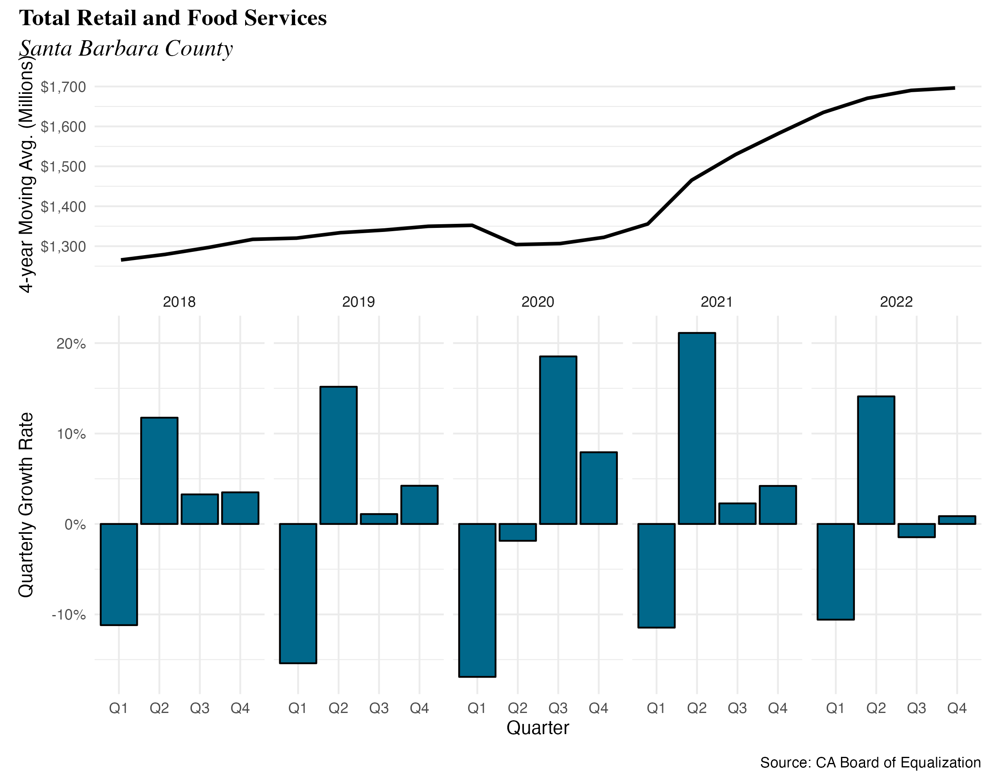
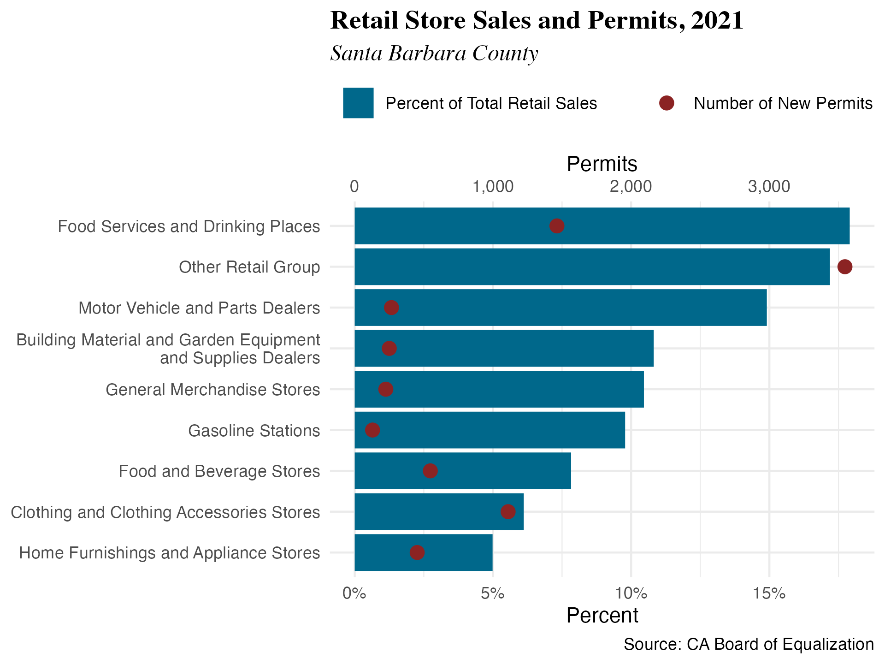
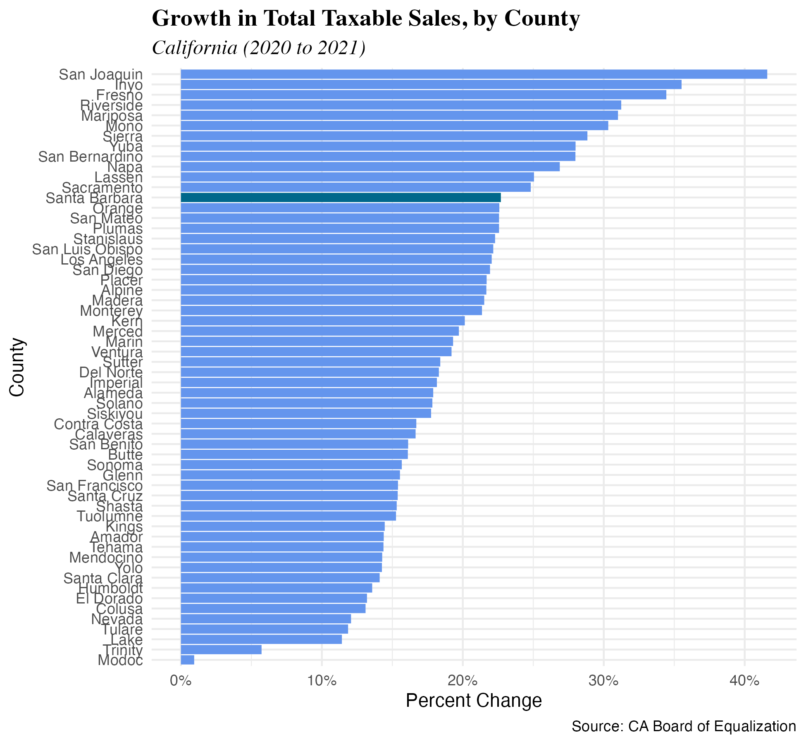
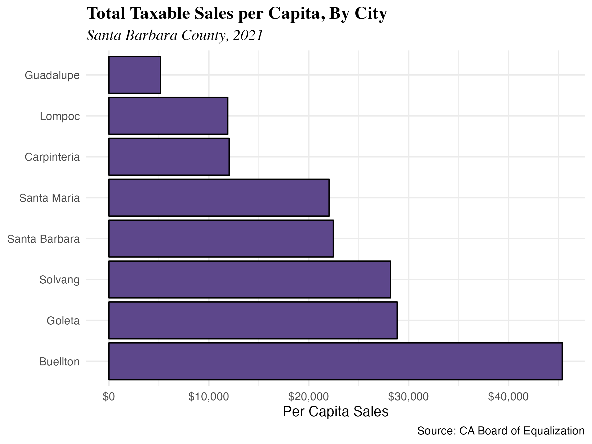
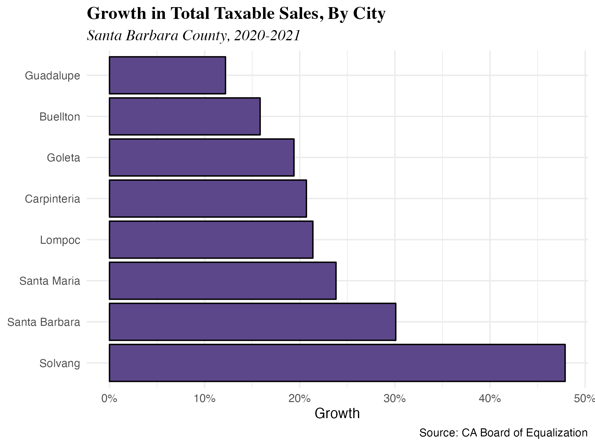

3 Inflation and Retail Sales
3.1 Inflation
The inflation rate is measured by calculating the percentage change in the Consumer Price Index (CPI), which tracks the prices of a basket of goods and services commonly purchased by consumers, over a specific period of time. The CPI for all items measures the changes in prices for all goods and services, while the CPI for all items less food and energy measures the changes in prices for goods and services excluding food and energy, which are often volatile.
The COVID-19 pandemic had a significant impact on inflation rates, with the inflation rate experiencing a sharp decrease in March 2020, dropping to 0.4% compared to 2.34% in January 2020. This was the largest monthly drop since the 2008 financial crisis. The pandemic also led to a recession, with many businesses shutting down, leading to reduced economic activity and decreased consumer spending. As a result, inflation rates remained low for several months. However, inflation rates have since rebounded and are now a concern for policymakers.
As of 2023, the CPI rose 0.05% in March on a seasonally adjusted basis, after increasing 0.37% in February. The CPI for all items less food and energy rose 0.38% in March, after rising 0.45% in February Over the last 12 months, the all items CPI increased 4.99% before seasonal adjustment; this was the smallest 12-month increase since the period ending June 2022, which had an inflation rate of 8.93%. The all items less food and energy CPI rose 5.6% over the last 12 months.


The COVID-19 pandemic also had a significant impact on the money supply. In response to the economic impact of the pandemic, governments and central banks around the world have implemented various measures to increase the money supply and stimulate economic activity. M1 money supply includes currency, demand deposits, and other highly liquid accounts known as “other checkable deposits” (OCDs), whereas M2 money supply is less liquid in nature and includes M1 plus savings and time deposits, certificates of deposits, and money market funds. The current value of M1 supply is $19 trillion, and M2 supply stands at $21 trillion as of February 2023.
Before April 24, 2020, savings accounts were not considered part of M1. However, the limitations on the number of transfers from savings accounts were lifted on April 24, making them just as liquid and convenient as currency, demand deposits, and OCDs. As a result, savings accounts are now included in M1, along with currency, demand deposits, and a new item called “other liquid deposits,” which consists of both OCDs and savings deposits. This has led to a substantial increase in the value of M1, from $5 trillion under the old definition to $16 trillion under the new definition, and represents a clear break in the time series.
The increase in M1 was also driven by quantitative easing policies implemented by the Federal Reserve in response to the COVID-19 pandemic. Quantitative easing (QE) involves the central bank purchasing large amounts of financial assets, such as government bonds, in order to inject liquidity into the financial system and stimulate economic activity. By increasing the supply of money in the economy, the Federal Reserve hoped to lower interest rates, make borrowing cheaper, and encourage spending and investment. In March 2020, the Fed announced a program of unlimited QE, which involved purchasing at least $500 billion in Treasury securities and at least $200 billion in mortgage-backed securities1. By June 2020, the Fed’s balance sheet had increased by over $3 trillion from pre-pandemic levels, and by March 2022, it had reached a record high of over $9 trillion.


In times of high inflation or significant economic slowdown, the Federal Reserve often utilizes the federal funds rate as a primary tool to get things back in order. The federal funds rate is determined by the Federal Open Market Committee (FOMC), which assesses a variety of key economic indicators in order to determine whether to increase or decrease rates. One key signal is the inflation rate. According to the Federal Reserve, an inflation rate of 2% represents an optimal balance between employment levels and price stability.
During the COVID-19 pandemic and the ensuing recession, the Federal Reserve cut the federal funds rate to near zero in March 2020. The decision to lower the interest rate was made in response to the economic shock caused by the pandemic and the resulting lockdowns, which led to a significant decline in economic activity and a sharp increase in unemployment. The Federal Reserve believed that lowering interest rates would stimulate economic activity and help stabilize financial markets. Currently, the target rate is 5.25% to 5.5%, with the most recent rate increase of 25 basis points during the Fed’s March meeting in 2023.

The Taylor Rule, a monetary-policy “rule” that the nominal interest rate should be set in response to changes in inflation and output, prescribes a higher federal funds rate when inflation is above the Fed’s inflation target level of 2%, and a lower one if inflation falls below the target. The equation is typically written as2
\[i=2+\pi+\frac{1}{2}(\pi-2)+\frac{1}{2}(q-q^*)\]
where \(i\) is the nominal interest rate, \(\pi\) is the current inflation rate, \(q\) is the level of output or economic activity, and \(q^*\) is the central bank’s target level of output, so \((q - q^*)\) is the deviation of real quarterly output from a linear trend to measure the output gap.
The Taylor Rule suggested nominal interest rates should have been about 10.17% by the end of 2022 Q4. Going forward, if the Taylor Rule is any indication, the federal funds rate should be set at a high level since the current inflation is above the Fed’s targeted level.
3.2 Retail Sales
Key Points
- Retail sales growth continued its steady climb throughout the entirety of 2023 at an average growth rate of 4.04% every quarter.
- With 17.91% of total taxable sales, Food Services and Drinking Places remained the largest industry in the county.
- Solvang had the largest one-year growth in total sales of 47.9%, and Guadalupe had the least one-year increase in growth of 8.63%.
Retail sales grew throughout 2023. The annualized growth rates by quarter were -11.46%, 21.13%, 2.28%, and 4.21%, respectively. The 4-quarter moving average for retail sales in the county remained steady, slightly increasing throughout the year. Overall, growth was stronger than in 2022: average quarterly growth was 4.04%, compared to 1.92% in 2022.

Disaggregated by industry, the top two industries (excluding Other Retail Group) by percentage of total sales was represented by Food Services and Drinking Places at the top with 17.91% of sales, followed by Motor Vehicle and Parts Dealers at 14.91%. The top three industries by number of permits, excluding Other Retail Group, were Food Services and Drinking Places at 1,463, Clothing and Clothing Accessories Stores at 1,110, and Food and Beverage Stores at 547.

Santa Barbara County ranked 13th out of 58 counties in terms of sales growth in 2023, which is better than the county’s rank of 44th in 2022. The county of San Joaquin experienced the largest increase in total sales with a rise of 41.6%. No county experienced a decrease in total sales from 2022 to 2023.

In 2023, all cities within Santa Barbara County increased in total sales. Solvang showed impressive growth of 47.9%, the highest in the county. Not only did Solvang have the highest overall retail sales growth, it was also the highest in sales growth per capita. On the other hand, Guadalupe grew 8.63% in per capita sales, while Lompoc grew 25.07% during 2023. In Buellton, the taxable sales per capita stands at $45,376, or 206% of the county average of $21,998, while in Guadalupe the taxable sales per capita is only $5,150, or 23.41% of the county average. This is a massive difference within the same county, with Buellton’s taxable sales per capita at almost nine times that of Guadalupe.
